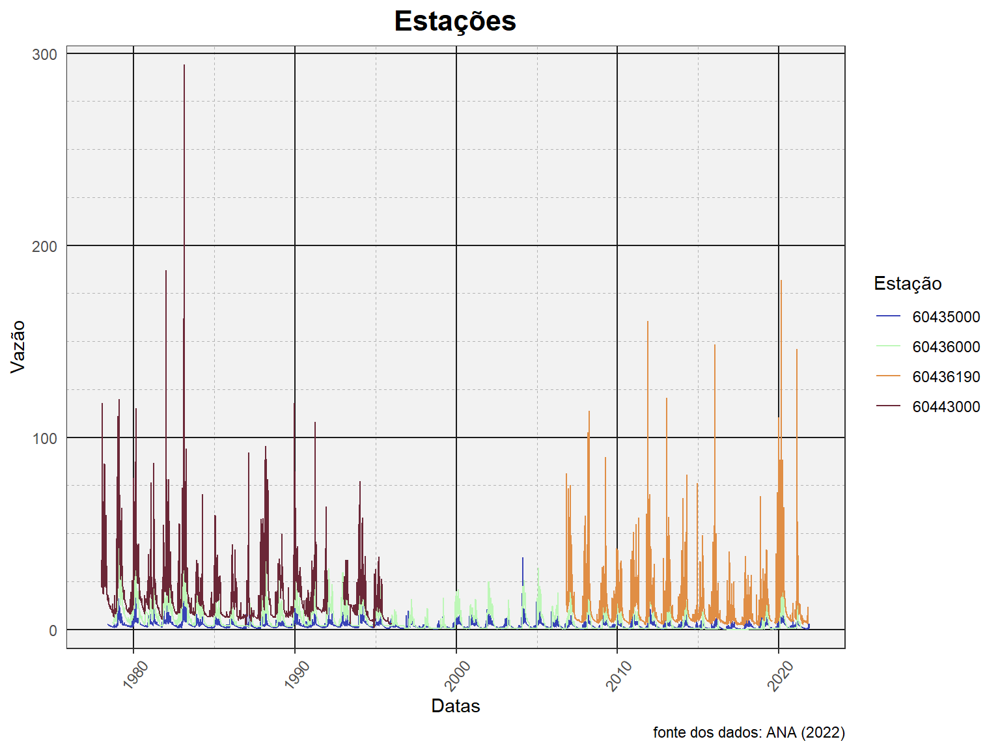
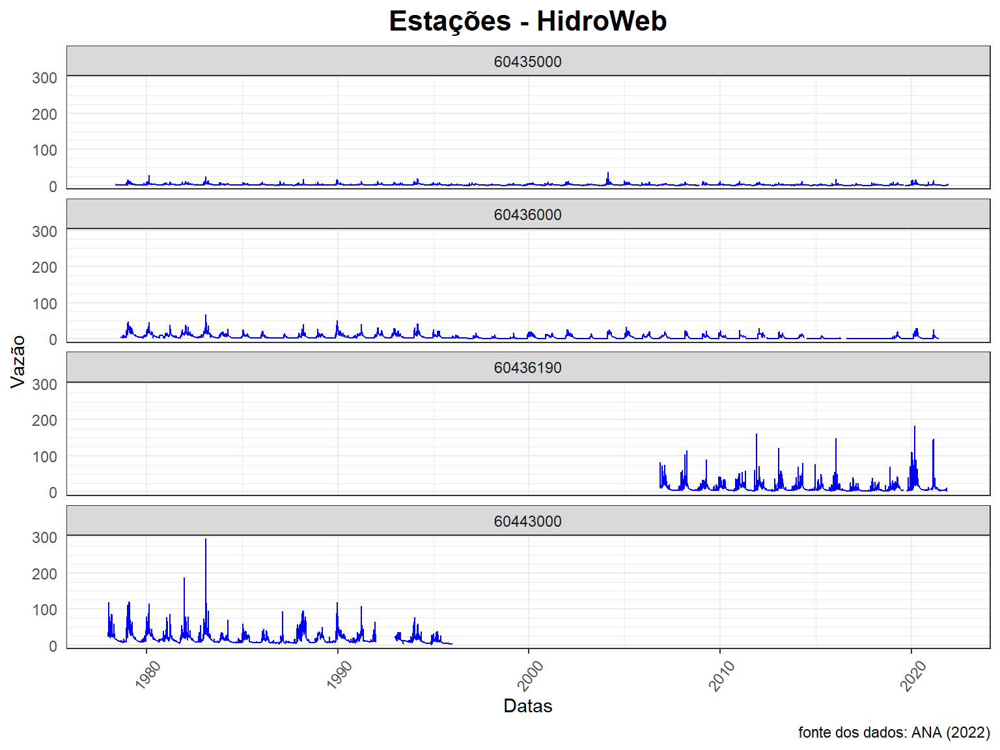

Nesta aula, iremos realizar um conjunto de atividade que nos ajudarão entender os dados que temos em mão. Essas atividade são conhecidas como análise exploratória de dados.
Não existe um conjunto único de atividades que define uma análise exploratória. O que se costuma fazer nessa etapa de um estudo vai depender da natureza do estudo.
Embora nossa atividade final é a de relaizar um estudo de análise de frequÊncia de cheias, nesta aula, apresentaremos algumas atividades mais gerais, que podem e devem ser utilizadas em outros tipos de estudo.
Para iniciar essas atividades, vamos primeiro carregar os dados que foram obtidos na aual anterior e gravados em arquivos no fomato texto.
Leitura dos dados gerados na última aula
Para carregar esses dados de vazão, precisamos ler os arquivos com extensão txt, que foram criados com os dados de vazão obtidos via webservide da ANA.
Faremos isso com os três arquivos existentes, o primeiro que contém apenas a série histórica de uma estação específica, o segundo que consiste dos dados diários da série histórica de quatro estações, e por último, aquele com os valores de máximo, mínimo e média todos a nível anual.
Para não precisarmos redefinir a coluna de Datas como sendo do formato Date (lembrar que o R vai ler ela automaticamente como character), podemos usar o argumento colClasses = para avisar ao R a classe de cada coluna. Além disso, vamos aproveitar e transformar a coluna de código das estações como fator.
dados_60435000 <- read.table(file = "dados/60435000.txt",
sep = "\t",
dec = ".",
header = T,
fileEncoding = "UTF-8",
colClasses = c("factor", "Date", "numeric"))
dados_todas <- read.table(file = "dados/todas_estacoes.txt",
sep = "\t",
dec = ".",
header = T,
fileEncoding = "UTF-8",
colClasses = c("factor", "Date", "numeric"))
resumo_todas <- read.table(file = "dados/Resumo_estacoes.txt",
sep = "\t",
dec = ".",
header = T,
fileEncoding = "UTF-8")Visualizar a disponibilidade de dados
É comum realizar estudos hidrológicos que contemplem, pelo menos num primeiro momento, um número elevado de estações que, em tese, podem ser utilizadas.
Para termos uma visão de conjunto dos dados que estão disponíveis, é interessante fazer uma plotagem que permite entender o período de dados disponíveis em cada estação, bem como a ocorrência de falhas nas séries. Essa visão mais geral nos ajuda a definir quais estações devem ser selecionadas, e possivelmente o período de dados mais adequado para o estudo.
Mas mesmo que estejamos trabalhando com apenas uma estação, é sempre interessante visualizar o período disponível, bem como as falhas contidas no registro.
Iniciaremos essa visualização da disponibilidade dos dados com apenas uma estação. Na etapa seguinte, expandiremos para um conjunto de quatro estações selcionadas na aula anterior.
Faremos um gráfico do tipo heatmap, que é basicamente uma figura que coloca cores numa Tabela. Neste primeiro passo, para cada estação, faremos um hetamap das vazões médias mensais com os anos no eixo-y e os meses no eixo-x. A tonalidade das cores estará associada à magnitude da vazão média do mês em questão. Quando mês não possui vazão, a região do mês correspodente ficará branca.
O resulatdo final permite visualizar, dentro de uma faixa de anos, a maginitude das vazões por meio de cores, e também a ocorrência de falhas nos registros, permitindo reconhecer de cara a sazonalidade das vazões, com cores mais fortes no período úmido e cores mais suaves no período seco.
Para construir essa Figura inicial com apenas uma estação, vamos
trabalhar com o dataframe denominado
dados_60435000, cujas primeiras observações podem ser
vistas abaixo, onde observamos 3 colunas, o código da estação, a data, e
o valor da vazão diária correspondente.
head(dados_60435000) Cod_estacao Data Vazao
1 60435000 1978-05-01 NA
2 60435000 1978-05-02 NA
3 60435000 1978-05-03 NA
4 60435000 1978-05-04 NA
5 60435000 1978-05-05 NA
6 60435000 1978-05-06 NAPara facilitar a construção do heatmap, que precisa separar as informações de mês e ano, vamos expandir o dataframe com mais duas colunas, uma com os meses e a outra com os anos, como pode ser visto na sequência,
dados_60435000$Ano <- year(dados_60435000$Data)
dados_60435000$Mes <- month(dados_60435000$Data)
head(dados_60435000) Cod_estacao Data Vazao Ano Mes
1 60435000 1978-05-01 NA 1978 5
2 60435000 1978-05-02 NA 1978 5
3 60435000 1978-05-03 NA 1978 5
4 60435000 1978-05-04 NA 1978 5
5 60435000 1978-05-05 NA 1978 5
6 60435000 1978-05-06 NA 1978 5As duas colunas extras permitirão a realização do cálculo das vazões
médias mensais para cada ano. Para isso, utilizaremos as funções
group_by(), summarize() e mean().
Ao final, rearrumamos as linhas em ordem decrescente de ano apenas para
criarmos um heatmap que coloque os anos iniciais na
parte de cima da Figura, com veremos mais adiante,
dados_60435000_v2 <-
dados_60435000 %>%
group_by(Cod_estacao, Ano, Mes) %>%
summarise(Vazao = mean(Vazao)) %>%
arrange(desc(Ano))
tail(dados_60435000_v2, 12)# A tibble: 12 × 4
# Groups: Cod_estacao, Ano [2]
Cod_estacao Ano Mes Vazao
<fct> <dbl> <dbl> <dbl>
1 60435000 1979 9 1.63
2 60435000 1979 10 1.38
3 60435000 1979 11 2.19
4 60435000 1979 12 2.15
5 60435000 1978 5 NA
6 60435000 1978 6 2.20
7 60435000 1978 7 1.80
8 60435000 1978 8 1.52
9 60435000 1978 9 1.34
10 60435000 1978 10 1.59
11 60435000 1978 11 1.40
12 60435000 1978 12 2.71Com esse novo_dataframe em mãos, podemos construir a Figura desejada.
Mas para utilizar a função heatmap(), precisamos fazer uma
pequena reestruturação, já que essa função precisa receber uma matriz
com os valores de vazão média mensal, que devem estar organizados de uma
forma específica, com as linhas representando os anos e as colunas
representando os meses. Essa reestruturação é feita com o código
abaixo,
dados_heatmap <- pivot_wider(data = dados_60435000_v2,
names_from = Mes,
values_from = Vazao,
names_sort = TRUE)
head(dados_heatmap)# A tibble: 6 × 14
# Groups: Cod_estacao, Ano [6]
Cod_estacao Ano `1` `2` `3` `4` `5` `6` `7` `8`
<fct> <dbl> <dbl> <dbl> <dbl> <dbl> <dbl> <dbl> <dbl> <dbl>
1 60435000 2021 1.12 4.26 3.18 2.25 1.47 1.05 0.744 0.471
2 60435000 2020 5.02 4.66 7.22 4.94 2.84 1.94 1.38 0.974
3 60435000 2019 2.48 1.86 3.03 3.65 2.11 1.29 0.896 NA
4 60435000 2018 2.61 2.13 2.55 2.08 1.33 0.840 0.478 0.351
5 60435000 2017 0.876 2.26 1.53 1.26 0.708 0.446 0.266 0.142
6 60435000 2016 3.90 2.67 2.27 1.23 0.933 0.517 0.306 0.176
# … with 4 more variables: `9` <dbl>, `10` <dbl>, `11` <dbl>,
# `12` <dbl>Agora basta utiliza a função heatmap() para construir a
Figura desejada. Primeiro apagamos as primeiras duas colunas dessa
matriz, porque a primeira traz o código da estação e a segunda os anos,
ambas desnecessárias para fazer a Figura.
Para construção do gráfico abaixo, usando a função
heatmap(), precisamos apenas de uma matriz com os valores a
serem utilizados.
# Remoção das primeiras duas colunas
dados_heatmap <- as.matrix(dados_heatmap[,-c(1,2)])
# Legenda do eixo "x" (trocar números pela abreviação dos meses)
meses <- c("Jan", "Feb", "Mar", "Abr", "Mai", "Jun",
"Jul", "Ago", "Set", "Out", "Nov", "Dez")
# Criação do heatmap
heatmap(dados_heatmap, Colv = NA, Rowv = NA, scale = "none",
labCol = meses,
labRow = 2021:1978)
Podemos perceber algumas características importantes nessa plotagem da disponibilidade dos dados de vazão da estação 60435000.
Logo na primeira linha, que representa o ano de 1978, podemos ver que não há dados nos 5 primeiros meses, já que temos a cor branca representando os valores de vazão. No restante dos anos, pode-se verificar a ocorrência de falhas em mais três oportunidades: dez/2008, jan/2009 e ago/2019.
Além das falhas, a Figura indica vazões médias mensais mais baixas (tons mais suaves) no meio do ano, entre os meses de junho a outubro, e vazões mais altas (tons mais escuros) entre novembro e maio.
Outra maneira de fazermos o mesmo gráfico é usando o ggplot2, abaixo segue um código mostrando seu formato. Falaremos mais desse pacote, com suas funções e argumentos, ao decorrer deste módulo, portanto não se preocupe tanto com a notação abaixo - o importante é mostrar que podemos atingir o mesmo objetivo de diferentes formas usando diferentes funções dentro do R.
ggplot() +
# gráfico em sí
geom_tile(data = dados_60435000_v2,
aes(x = Mes, y = Ano, fill = Vazao)) +
# o que vai estar no eixo-x:
scale_x_discrete(limits = factor(1:12),
labels = meses,
na.translate = TRUE,
expand = c(0, 0)) +
# escala do nosso eixo-y:
scale_y_continuous(breaks = 1978:2021,
trans = "reverse", # Aqui deixamos o eixo na ordem decrescente
expand = c(0, 0)) +
# as cores de gradiente do nosso gráfico:
scale_fill_gradient(low = "lightblue", high = "darkblue",
na.value = "yellow") +
# Deixamos aqui sem marcações de qualquer tipo no gráfico
# Além de colocarmos a cor de fundo amarela (para ficar igual aos valores NAs)
theme(axis.ticks = element_blank(),
panel.grid.major = element_blank(),
panel.grid.minor = element_blank(),
panel.background = element_rect(fill = "yellow"))
Plotagem da série histórica
time <- as.Date(dados_60435000$Data)
plot(time,dados_60435000$Vazao,type="l",
main = "Vazões diárias - estação 60435000",
xlab = "Anos",ylab = "Q (m3/s)")
# Adiciona grid horizontal apenas
grid(nx = NA, ny = NULL,
lty = 2, # Grid line type
col = "gray", # Grid line color
lwd = 2) # Grid line width
Caracterização da distribuição
Diagramas de caixa (boxplot)
Histograma
Funções de densidade
Frequência amostral
Curva de permanência
Avaliação de tendência monotônica
## Medidas de associação
Caracterização gráfica com ggplot2
Diferentemente dos gráficos que podem ser feitos no R base (sem pacotes adicionais), o ggplot2 atua um pouco diferente na forma em que é chamado. Por exemplo, se quisesse fazer um gráfico da série histórica da estação 60435000, poderíamos fazer sem pacotes.
plot(x = dados_60435000$Data,
y = dados_60435000$Vazao)Também podemos mexer com alguns argumentos dessa função base para mudar coisas como o título, nome dos eixos, a cor e o tipo de gráfico (ponto x linha por exemplo).
plot(x = dados_60435000$Data,
y = dados_60435000$Vazao,
main = "Estação 60435000",
xlab = "Datas", ylab = "Vazão",
type = "l",
col = "blue")
Já com a função ggplot() não adianta apenas definirmos
em quem iremos mexer. Dentro dessa função existe um argumento chamado de
aes. Ele vem do inglês, aesthetics e, como o
nome diz, reflete a estética do gráfico, o que você vai mexer nele
(cores, pontos, linhas…). Se chamarmos apenas o ggplot()
com o argumento aes definido, nada será plotado, mas
veremos os eixos e as grades (imagem abaixo). Lembrar que esses plots
aparecerão no RStudio no canto inferior direito.

No ggplot2, a escrita é um pouco diferente do
R base e se assemelha ao que fizemos com o pipe
operator. Escrevemos ggplot() e em seguida vamos
somando o que queremos com o sinal de “+”. Por exemplo,
se quisermos um gráfico de linha vamos escrever
+ geom_line(). Temos dois jeitos de escrever isso, um
colocando os dados dentro do ggplot() e deixando o
geom_line() em branco, ou o contrário. Ambos códigos abaixo
retornam o mesmo gráfico.
Similar ao R base, podemos mexer em todos os aspectos gráficos aqui, como a cor dos pontos e o tema (theme). Esse tema refere a todos os detalhes gráficos (qual o tamanho das linhas do gráfico, tamanho das letras, do título, qual fonte…). Já existem diversos temas pré-programados com o ggplot2, como o tema bw (black and white, ou preto e branco).
ggplot() +
geom_line(data = dados_60435000, aes(x = Data, y = Vazao), col = "blue") +
labs(title = "Estação 60435000", subtitle = "série histórica",
caption = "fonte dos dados: ANA (2022)",
x = "Datas", y = "Vazão") +
theme_bw()
ggplot() +
geom_line(data = dados_60435000, aes(x = Data, y = Vazao), col = "blue") +
labs(title = "Estação 60435000", subtitle = "série histórica",
caption = "fonte dos dados: ANA (2022)",
x = "Datas", y = "Vazão") +
scale_y_continuous(expand = c(0, 1)) +
theme_bw() +
theme(plot.title = element_text(size = 16, face = 2, hjust = 0.5),
plot.subtitle = element_text(size = 12, hjust = 0.5),
axis.ticks.y = element_blank(),
axis.text.x = element_text(angle = 50, vjust = 0.5))
tema_top <-
theme_bw() +
theme(plot.title = element_text(size = 16, face = 2, hjust = 0.5),
plot.subtitle = element_text(size = 12, hjust = 0.5),
axis.ticks.y = element_blank(),
axis.text.x = element_text(angle = 50, vjust = 0.5))
ggplot() +
geom_line(data = dados_60435000, aes(x = Data, y = Vazao), col = "blue") +
labs(title = "Estação 60435000", subtitle = "série histórica",
caption = "fonte dos dados: ANA (2022)",
x = "Datas", y = "Vazão") +
scale_y_continuous(expand = c(0, 1)) +
tema_top
Gráficos com as 4 estações
ggplot() +
geom_line(data = dados_todas,
aes(x = Data, y = Vazao, col = Cod_estacao)) +
labs(title = "Estações",
caption = "fonte dos dados: ANA (2022)",
x = "Datas", y = "Vazão",
col = "Estação") +
scale_y_continuous(breaks = seq(0, 300, 100),
minor_breaks = seq(0, 300, 25),
expand = c(0, 10)) +
scale_color_manual(values = c("#3943B7", "#BDF7B7",
"#E08E45", "#6B2737")) +
theme(panel.background = element_rect(fill = "grey95"),
panel.grid.major = element_line(color = "gray10",
size = 0.5),
panel.grid.minor = element_line(color = "gray70",
linetype="dashed",
size = 0.25))
ggplot() +
geom_line(data = dados_todas, col = "blue",
aes(x = Data, y = Vazao)) +
labs(title = "Estações - HidroWeb",
caption = "fonte dos dados: ANA (2022)",
x = "Datas", y = "Vazão") +
scale_y_continuous(breaks = seq(0, 300, 100),
minor_breaks = seq(0, 300, 25),
expand = c(0, 10)) +
facet_wrap(~ Cod_estacao, nrow = 4)
ggplot() +
geom_line(data = dados_todas, col = "blue",
aes(x = Data, y = Vazao)) +
labs(title = "Estações - HidroWeb",
caption = "fonte dos dados: ANA (2022)",
x = "Datas", y = "Vazão") +
facet_wrap(~ Cod_estacao, nrow = 4, scales = "free_y")Outros gráficos interessantes
# Mudar os leveis do Fator mês!
levels(dados_60435000$Mes) [1] "1" "2" "3" "4" "5" "6" "7" "8" "9" "10" "11" "12"levels(dados_60435000$Mes) <-
c("Jan", "Feb", "Mar", "Abr", "Maio", "Jun",
"Jul", "Ago", "Set", "Out", "Nov", "Dez")
levels(dados_60435000$Mes) [1] "Jan" "Feb" "Mar" "Abr" "Maio" "Jun" "Jul" "Ago" "Set"
[10] "Out" "Nov" "Dez" # Fazer um objeto contendo um ggplot
grafico_boxplot_1 <-
ggplot(data = dados_60435000,
aes(x = Mes, y = Vazao)) +
geom_boxplot() +
stat_summary(fun = mean,
geom = "line",
aes(group = 1),
col = "red")
# Printar o ggplot na tela do computador
grafico_boxplot_1Gráficos usando a tabela de resumo estatístico
resumo_todas$Cod_estacao <- as.factor(resumo_todas$Cod_estacao)
ggplot(data = resumo_todas,
aes(x = ano_hidro, y = media, col = Cod_estacao)) +
geom_ribbon(aes(x = ano_hidro, fill = Cod_estacao,
ymax = maxima, ymin = minima),
alpha = 0.5) +
geom_line() +
geom_point() +
labs(title = "Estações - HidroWeb",
caption = "fonte dos dados: ANA (2022)",
x = "Ano hidrológico", y = "Vazão",
fill = "Estação", color = "Estação")ggplot(data = resumo_todas,
aes(x = ano_hidro, y = media, col = Cod_estacao)) +
geom_ribbon(aes(x = ano_hidro, fill = Cod_estacao,
ymax = maxima, ymin = minima),
alpha = 0.5) +
geom_line() +
geom_point() +
labs(title = "Estações - HidroWeb",
caption = "fonte dos dados: ANA (2022)",
x = "Ano hidrológico", y = "Vazão",
fill = "Estação", color = "Estação") +
facet_wrap(~ Cod_estacao, nrow = 4, scales = "free_y")Livros !
Livro do criador do ggplot2:
Entender melhor quais cores usar:
- http://www.cookbook-r.com/Graphs/Colors_(ggplot2)/
- https://eos.org/features/visualizing-science-how-color-determines-whatwesee?utm_source=eos&utm_medium=email&utm_campaign=EosBuzz052920
- https://eagereyes.org/basics/rainbow-color-map
- https://ieeexplore.ieee.org/document/4118486
Todas as cores do R:
- http://www.stat.columbia.edu/~tzheng/files/Rcolor.pdf >>>>>>> 2aa96fc38fa716a70fee28c186be23697f6320d1